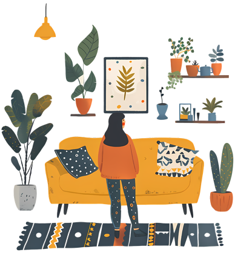

리모델링과 인테리어에 관한 관심들이 늘어나면서 인테리어 업체를 알아보거나 셀프 인테리어를 계획하는 이들이 늘어나고 있다. 그래서 이번에 준비한 주제! 인테리어업체와 셀프인테리어에 대해 비교해 보겠다.
우선, 장점부터 말하자면, 경험 많은 전문가들이 시공을 진행하기 때문에 높은 완성도를 기대할 수가 있다. 그리고 계획부터 시공까지 전문가들이 진행하기 때문에 시간 절약이 가능하다. 또한, 문제가 생겼을 때는 업체에서
책임지고 해결해 준다. 경험이나 정보 부족으로 알기 어려운 다양한 자재와 디자인 옵션을 제공받을 수 있다.
단점은 아무래도 전문 인테리어 업체의 서비스는 비용이 많이 드는 경우들이 대부분이다. 그리고 업체의 제안에 따라야 하므로 자신만의 개성을 표현하기가 어려울 수가 있다. 원하는 바를 정확하게 전달하지 못하면 결과물이
생각과 다를 우려가 있다. 의견 제시를 할 때에는 정확히 전달하고 확실하게 이해했는지 확인 후, 예시 등을 제시해 주는 것이 좋다. 반대로, 업체의 설명이 이해되지 않는다면 사전에 정확하게 확인을 해주고 진행해야 한다.
또한, 업체의 일정에 따라서 작업이 진행되므로 시간을 조율해야 할 수 있다.
셀프인테리어를 진행했을 때의 장점은 아무래도 직접 모든 과정을 진행하기 때문에 인건비를 절약할 수 있다. 그리고 자신만의 스타일과 취향을 반영할 수가 있어 독특한 인테리어를 재현해 낼 수 있다. 원하는 시간에 작업을
진행하고, 필요에 따라서 계획을 수정하는 데에 용이하다. 다양한 인테리어 기술을 배우고 DIY 스킬을 향상할 수 있다. 요즘에는 전문가 못지않은 이들도 많이 있는데, 많은 사전 정보 획득과 본인의 타고난 센스가 함께
발휘된다면 최상일 듯하다.
단점은 계획, 구매, 시공 등 모든 과정을 직접 해야 하는 과정인 만큼 시간이 많이 소요된다. 또한, 전문적인 기술이나 도구가 필요한 작업은 어려울 수가 있다. 경험 부족으로 인해서 실수나 실패할 가능성이 높고, 그로 인해서
생각보다 자재의 낭비가 생길 수 있다. 하자가 발생해도 본인이 책임을 지고 다시 하거나 더 큰 문제가 생길 우려가 있다. 전문가의 손길이 닿지 않아서 당연히 완성도가 떨어질 수밖에 없다. 그리고 시공 기술이 미흡하여 잘못
건들이면 문제가 커지는 내력벽, 전기, 설비 등을 건드리거나 법규제 부분에서 사전 신고 등이 필요한 부분들을 놓칠 수가 있다.
결국, 인테리어 업체를 선택하던, 셀프 인테리어 업체를 선택하던 각 옵션의 장단점을 면밀하게 고려함으로써 자신의 상황과 요구에 알맞는 결정을 내려야 한다. 그렇다면, 너무 큰 비용을 들이지 않으면서도 만족스럽게 인테리어를 할 수 있는 절충안도 알아보도록 하자.
홈 스타일링은 인테리어 스타일링이라고도 불리며, 공간의 구조 변경이나 큰 공사 없이 가구나 커튼, 페브릭, 조명, 그리고 다양한 소품들을 활용해 고객의 개성과 취향을 반영해 공간을 재창조하는 작업을 의미한다. 홈 스타일링은 인테리어나 리모델링과는 다르게, 기존의 공간에 새 생명을 불어넣는 데에 초점을 맞춘다. 비교적 큰 비용이나 시간 투자 없이도 인테리어 못지않은 효과를 낼 수 있기 때문에, 전세나 월세 거주자, 시간이나 비용이 부담되는 경우에 특히 유용하다. 예를 들어, 인테리어는 공간을 새롭게 설계하고, 리모델링은 구조 변경 및 마감재 교체 등을 포함하지만, 홈 스타일링의 경우 기존의 공간에 새 분위기를 추가하는 것에 중점을 둔다.
최소한의 시공 후, 가구나 소품으로 직접 스타일링 하는 방법은 매우 효과적이면서 개성 있는 공간을 만들 수 있는 좋은 전략이다. 조명 공사와 빌트인 가구 제작 등 셀프로 하기엔 전문성 및 시간이 부족한 부분은 인테리어 업체에 직접 맡기고, 나중의 스타일링은 개인의 취향을 반영하는, 인테리어 업체와 셀프 인테리어의 장점을 합치고 단점을 보완한 절충안이다.